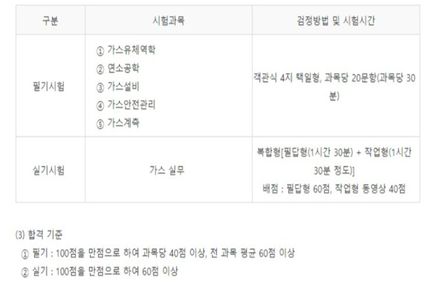

가스기사
가스기사 자격증은
화학공학과와 기계공학과 졸업예정자들이
응시자격을 충족하여 많이 취득하는 자격증입니다.
기사 자격증 중에서 난이도가 높기로 유명하기도 합니다.
고압가스 및 용기제조, 가스의 취급, 냉동기계제조, 도시가스 공급 등
과 같은 분야로 취업하고자 하는 분들이 주로 취득합니다.
시험과목 및 검정방법

화공기사
화학분석기사
대기환경기사
수질환경기사
처음으로